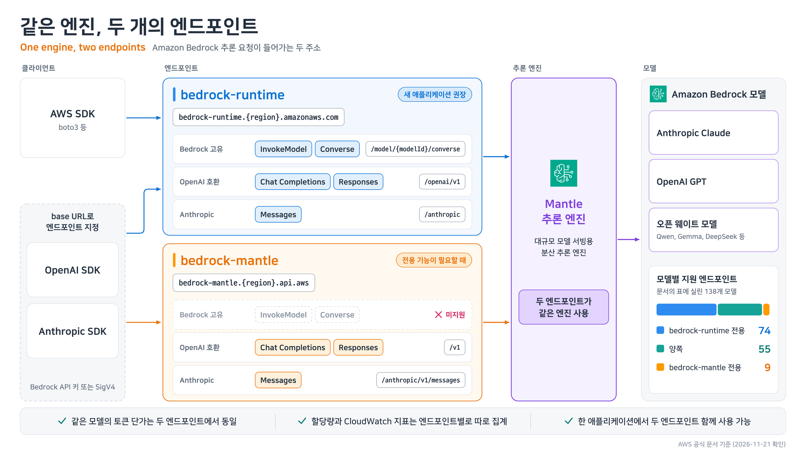
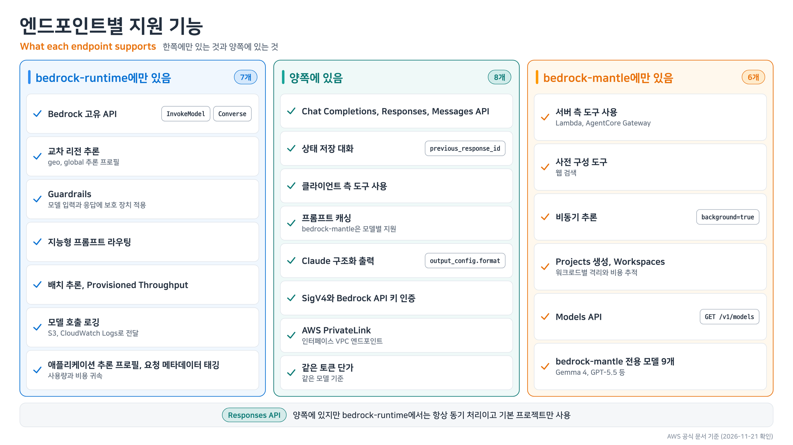
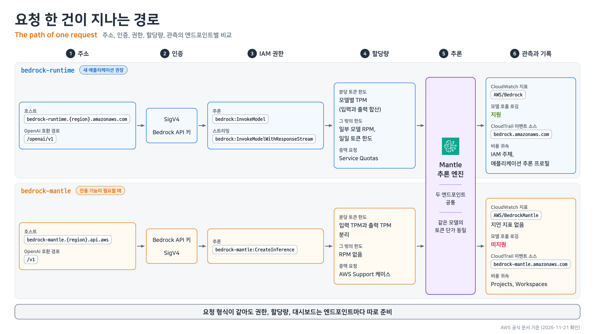
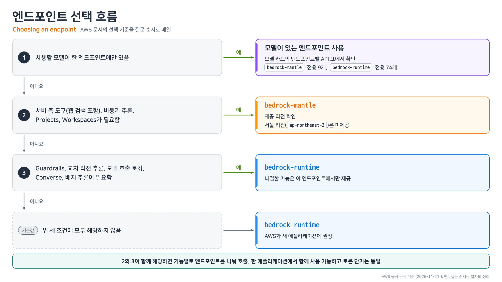

Amazon Bedrock Runtime과 Mantle의 차이와 선택 기준How Amazon Bedrock Runtime and Mantle differ, and which to choose
Amazon Bedrock에는 추론 요청을 받는 엔드포인트가 bedrock-runtime과 bedrock-mantle 두 개 있습니다. 두 엔드포인트는 같은 Mantle 추론 엔진을 사용하고 같은 모델의 토큰 단가도 같습니다. 다른 점은 받는 API, 한쪽에만 있는 기능, 권한과 할당량과 관측 체계, 제공되는 모델과 리전입니다. AWS 문서는 새 애플리케이션에 bedrock-runtime을 권장합니다. bedrock-mantle은 서버 측 도구 사용, 비동기 추론, Projects와 Workspaces, 전용 모델이 필요할 때 사용하라고 안내합니다. 이 글은 2026년 11월 21일에 확인한 AWS 문서를 기준으로 두 엔드포인트의 차이와 선택 기준을 정리합니다.Amazon Bedrock has two endpoints that take inference requests, bedrock-runtime and bedrock-mantle. Both use the same Mantle inference engine, and the per-token price of a model is the same on both. They differ in the APIs they accept, the features only one of them has, how permissions, quotas and observability work, and which models and Regions they cover. The AWS documentation recommends bedrock-runtime for new applications. It says to use bedrock-mantle when you need server-side tool use, asynchronous inference, Projects and Workspaces, or a model that is only there. This post sets out the differences and the criteria for choosing, based on the AWS documentation checked on November 21, 2026.
- 같은 엔진: 두 엔드포인트 모두 Mantle 추론 엔진을 사용합니다.
bedrock-mantle은 엔드포인트의 이름이며 다른 엔진을 뜻하지 않습니다.Same engine: both endpoints use the Mantle inference engine.bedrock-mantleis the name of an endpoint, not of a different engine. - 받는 API:
bedrock-runtime은 InvokeModel, Converse, Chat Completions, Responses, Messages 다섯 가지를 받습니다.bedrock-mantle은 Chat Completions, Responses, Messages 세 가지를 받습니다.APIs:bedrock-runtimeaccepts five (InvokeModel, Converse, Chat Completions, Responses, Messages) andbedrock-mantleaccepts three (Chat Completions, Responses, Messages). - 한쪽에만 있는 기능: Guardrails, 교차 리전 추론, 모델 호출 로깅, 배치 추론은
bedrock-runtime에만 있습니다. 서버 측 도구 사용, 웹 검색, 비동기 추론, Projects와 Workspaces는bedrock-mantle에만 있습니다.Features on one side only: Guardrails, cross-Region inference, model invocation logging and batch inference are only onbedrock-runtime. Server-side tool use, web search, asynchronous inference, and Projects and Workspaces are only onbedrock-mantle. - 운영 체계: IAM 액션, 할당량, CloudWatch 네임스페이스가 엔드포인트별로 분리되어 있습니다. 추론 액션은
bedrock:InvokeModel과bedrock-mantle:CreateInference, 네임스페이스는AWS/Bedrock과AWS/BedrockMantle입니다.Operations: the IAM actions, the quotas and the CloudWatch namespaces are separate for each endpoint. The inference actions arebedrock:InvokeModelandbedrock-mantle:CreateInference, and the namespaces areAWS/BedrockandAWS/BedrockMantle. - 모델과 리전: 문서의 138개 모델 가운데 74개는
bedrock-runtime에만, 9개는bedrock-mantle에만 있습니다.bedrock-mantle은 15개 리전에 있고 서울 리전(ap-northeast-2)에는 없습니다.Models and Regions: of the 138 models in the documentation, 74 are only onbedrock-runtimeand 9 are only onbedrock-mantle.bedrock-mantleis in 15 Regions and is not in the Seoul Region (ap-northeast-2).
같은 모델을 호출하는 주소 두 개
Amazon Bedrock 문서에서 OpenAI SDK 예제를 찾으면 base URL이 두 가지로 나옵니다. 어떤 예제는 https://bedrock-runtime.us-east-1.amazonaws.com/openai/v1을 사용합니다. 다른 예제는 https://bedrock-mantle.us-east-1.api.aws/v1을 사용합니다. 모델 카드에도 bedrock-runtime 탭과 bedrock-mantle 탭이 함께 있습니다.
이 장면에서 세 가지를 묻게 됩니다. Mantle은 Bedrock과 다른 서비스인지, 엔진이나 요금이 다른지, 새로 만드는 애플리케이션은 어느 주소에 연결해야 하는지입니다.
그림 1이 전체 구조입니다. 두 주소는 같은 추론 엔진으로 들어가는 입구이고 입구마다 받는 API와 제공하는 기능이 다릅니다.

이 글은 두 엔드포인트(endpoint)의 차이를 네 가지로 나눠 정리합니다. 받는 API, 한쪽에만 있는 기능, 권한과 할당량과 관측, 모델과 리전입니다. 근거는 2026년 11월 21일에 확인한 AWS 문서입니다.
01
Mantle이라는 이름이 가리키는 두 가지
Mantle은 추론 엔진의 이름이면서 엔드포인트의 이름입니다. 이 두 뜻을 구분하면 나머지 차이가 정리됩니다.
엔진 이름으로는 AWS가 2025년 12월 4일에 Project Mantle이라는 이름으로 발표한 분산 추론 엔진을 가리킵니다. 발표문은 대규모 모델 서빙을 위한 엔진이라고 소개합니다. 특징으로는 새 모델의 빠른 온보딩, 서비스 품질 제어, 자동 용량 관리, OpenAI API 규격 호환을 듭니다.
엔드포인트 이름으로는 bedrock-mantle.{region}.api.aws라는 주소를 가리킵니다. 같은 발표에서 OpenAI 호환 API를 제공하는 새 엔드포인트로 나왔습니다. 그전부터 있던 주소는 bedrock-runtime.{region}.amazonaws.com이고 InvokeModel과 Converse 같은 Bedrock 고유 API가 여기에 있습니다.
이름이 같아서 bedrock-mantle로 호출해야만 Mantle 엔진을 사용하는 것처럼 보입니다. 문서의 설명은 다릅니다. 두 엔드포인트는 같은 Mantle 추론 엔진을 사용하며 bedrock-mantle은 엔드포인트의 이름일 뿐 다른 엔진을 뜻하지 않는다고 밝힙니다.
물류 센터에 비유하면 이해하기 쉽습니다. Mantle 엔진은 물건을 실제로 처리하는 물류 센터이고 두 엔드포인트는 그 센터의 접수 창구입니다. 본관 창구(
bedrock-runtime)는 자사 송장과 다른 회사 양식의 송장을 모두 받고 내용물 검사와 다른 지역 센터로 보내는 일을 함께 해 줍니다. 신관 창구(bedrock-mantle)는 다른 회사 양식의 송장만 받습니다. 대신 물건을 맡겨 두고 나중에 찾아가게 해 주고 필요한 심부름을 직원이 대신 합니다. 어느 창구에 맡겨도 같은 센터가 처리하고 요금표도 같습니다.
비유에서 자사 송장은 InvokeModel과 Converse이고 다른 회사 양식은 OpenAI와 Anthropic 호환 API입니다. 내용물 검사는 Guardrails, 다른 지역 센터로 보내는 일은 교차 리전 추론, 맡겨 두고 찾아가는 것은 비동기 추론, 직원의 심부름은 서버 측 도구 사용에 해당합니다. 비유와 다른 점도 있습니다. 두 창구가 받는 모델 목록이 같지 않고 신관 창구는 일부 리전에만 있습니다.
표 1은 두 엔드포인트에 기능이 더해진 순서입니다.
| 게시일 | 발표 내용 | 대상 엔드포인트 |
|---|---|---|
| 2025년 12월 4일 | Responses API를 제공하는 OpenAI 호환 엔드포인트와 Project Mantle 발표 | bedrock-mantle |
| 2026년 1월 29일 | Responses API의 서버 측 도구 사용 | bedrock-mantle |
| 2026년 2월 12일 | AWS PrivateLink 지원 | bedrock-mantle |
| 2026년 2월 26일 | OpenAI 호환 Projects API | bedrock-mantle |
| 2026년 6월 1일 | CloudWatch 지표(AWS/BedrockMantle 네임스페이스) | bedrock-mantle |
| 2026년 8월 17일 | OpenAI GPT-5.6 모델의 Responses, Chat Completions, Converse API 지원과 교차 리전 추론 | bedrock-runtime |
표 1. 두 엔드포인트의 주요 발표. AWS What's New 게시일 기준
Responses API와 그에 딸린 기능은 bedrock-mantle에 먼저 나왔습니다. 2026년 8월 17일 발표부터는 OpenAI GPT-5.6 모델을 bedrock-runtime에서도 Responses API로 호출합니다. 지금 문서는 새 애플리케이션에 bedrock-runtime을 권장합니다. bedrock-mantle은 그곳에만 있는 기능이나 모델이 필요할 때 사용하라고 안내하며 기존 애플리케이션은 변경 없이 계속 지원한다고 밝힙니다.
02
엔드포인트가 받는 API
첫 번째 차이는 받는 API입니다. bedrock-runtime은 다섯 가지를 모두 받습니다. bedrock-mantle은 OpenAI 호환 API 두 가지와 Anthropic Messages API를 받고 InvokeModel과 Converse는 받지 않습니다.
| API | bedrock-runtime | bedrock-mantle | 용도 |
|---|---|---|---|
| InvokeModel | 지원 | 미지원 | 모델 고유의 요청 형식으로 직접 호출. 텍스트, 이미지, 임베딩 생성 |
| Converse, ConverseStream | 지원 | 미지원 | 모델이 달라도 같은 형식으로 대화 |
| Chat Completions (OpenAI 호환) | 지원 | 지원 | 대화 기록을 클라이언트가 관리하는 대화 |
| Responses (OpenAI 호환) | 지원 | 지원 | 대화 상태를 서버에 저장하는 대화. 엔드포인트별 동작 차이는 06 챕터 |
| Messages (Anthropic) | 지원 | 지원 | Claude 모델을 Anthropic 요청 형식으로 호출 |
표 2. 엔드포인트별 API 지원. 모델마다 지원하는 API가 다르므로 모델 카드에서 확인
같은 API라도 주소, 경로, 모델을 지정하는 값이 다릅니다. OpenAI 호환 API는 두 엔드포인트 모두 OpenAI SDK나 HTTP 요청으로 호출하며 AWS SDK로는 호출하지 않습니다.
| 항목 | bedrock-runtime | bedrock-mantle |
|---|---|---|
| 호스트 | bedrock-runtime.{region}.amazonaws.com | bedrock-mantle.{region}.api.aws |
| OpenAI 호환 API의 base URL | https://bedrock-runtime.{region}.amazonaws.com/openai/v1 | https://bedrock-mantle.{region}.api.aws/v1일부 모델은 /openai/v1 |
| Anthropic Messages API | https://bedrock-runtime.{region}.amazonaws.com/anthropicInvokeModel로도 호출 | https://bedrock-mantle.{region}.api.aws/anthropic/v1/messages |
| 모델 값의 예 | global.openai.gpt-5.6-sol (추론 프로필 ID) | openai.gpt-5.6-sol (모델 ID) |
| 모델 목록 조회 | ListFoundationModels, ListInferenceProfiles | GET /v1/models |
표 3. 엔드포인트별 주소와 호출 방식
다음은 문서의 두 예제를 한 파일로 옮긴 코드입니다. 같은 OpenAI SDK 코드에서 base URL과 모델 값만 다릅니다. 요청과 응답 형식은 두 엔드포인트가 같습니다.
import os
from openai import OpenAI
api_key = os.environ["OPENAI_API_KEY"] # Amazon Bedrock API 키
# bedrock-runtime: 추론 프로필 ID로 모델을 지정
runtime = OpenAI(
base_url="https://bedrock-runtime.us-east-1.amazonaws.com/openai/v1",
api_key=api_key,
)
r1 = runtime.responses.create(
model="global.openai.gpt-5.6-sol",
input="Can you explain the features of Amazon Bedrock?",
)
# bedrock-mantle: 모델 ID로 모델을 지정
mantle = OpenAI(
base_url="https://bedrock-mantle.us-east-1.api.aws/v1",
api_key=api_key,
)
r2 = mantle.responses.create(
model="openai.gpt-5.6-sol",
input="Can you explain the features of Amazon Bedrock?",
)bedrock-runtime에서 OpenAI GPT 모델은 모델 ID가 아니라 us.나 global.로 시작하는 추론 프로필(inference profile) ID로 지정합니다. 이 모델들은 이 엔드포인트에서 한 리전 안의 추론을 지원하지 않기 때문입니다. bedrock-mantle에서는 모델 ID를 그대로 지정합니다.
03
한쪽에만 있는 기능
두 번째 차이는 엔드포인트에 연결된 기능입니다. Bedrock이 제공해 온 관리 기능은 bedrock-runtime에 있습니다. Responses API의 서버 측 도구와 비동기 처리, Projects와 Workspaces는 bedrock-mantle에 있습니다. 그림 2는 기능을 한쪽에만 있는 것과 양쪽에 있는 것으로 나눠 보여 줍니다.

| 기능 | bedrock-runtime | bedrock-mantle | 설명 |
|---|---|---|---|
| 교차 리전 추론 | 지원 | 미지원 | 추론 프로필로 요청을 여러 리전에 분산 |
| Guardrails | 지원 | 미지원 | OpenAI 호환 API에서는 요청 헤더로 지정 |
| 지능형 프롬프트 라우팅 | 지원 | 미지원 | |
| 배치 추론, Provisioned Throughput | 지원 | 미지원 | |
| 모델 호출 로깅 | 지원 | 미지원 | 요청과 응답을 Amazon S3나 CloudWatch Logs에 기록 |
| 서버 측 도구 사용 | 미지원 | 지원 | Lambda 함수나 AgentCore Gateway의 도구를 Bedrock이 실행 |
| 사전 구성 도구 | 미지원 | 지원 | 웹 검색 등 AWS가 제공하는 도구 |
| 비동기 추론 | 미지원 | 지원 | Responses API의 background=true |
| Projects | 기본 프로젝트만 | 지원 | OpenAI 호환 API의 워크로드 단위 경계 |
| Workspaces | 미지원 | 지원 | Anthropic Messages API의 워크로드 단위 경계 |
| 상태 저장 대화 | 지원 | 지원 | Responses API의 previous_response_id |
| 클라이언트 측 도구 사용 | 지원 | 지원 | |
| 프롬프트 캐싱 | 지원 | 지원 | bedrock-mantle은 모델에 따라 다름 |
표 4. 엔드포인트별 기능 지원. Amazon Bedrock 사용 설명서의 비교 표에 설명을 더함
bedrock-runtime에만 있는 기능
교차 리전 추론(cross-Region inference)은 요청을 여러 리전에 나눠 처리해 처리량을 높이는 기능입니다. 지역 단위 추론 프로필은 미국이나 유럽 같은 한 지역 안에서 요청을 보냅니다. global 추론 프로필은 모델이 있는 모든 상용 리전으로 요청을 보냅니다. bedrock-mantle은 요청을 받은 리전 안에서만 처리합니다.
Guardrails, 지능형 프롬프트 라우팅, 배치 추론, Provisioned Throughput도 이 엔드포인트에만 있습니다. 요청과 응답 전문을 남기는 모델 호출 로깅(model invocation logging)도 bedrock-runtime 호출만 기록합니다. OpenAI 호환 API로 호출해도 이 엔드포인트로 들어온 요청이면 기록됩니다.
bedrock-mantle에만 있는 기능
서버 측 도구 사용(server-side tool use)은 도구를 Bedrock이 대신 실행하는 방식입니다. 클라이언트 측 도구 사용에서는 모델이 도구 호출을 요청하면 애플리케이션이 실행하고 결과를 다시 보냅니다. 서버 측에서는 Lambda 함수나 AgentCore Gateway를 등록해 두면 Bedrock이 직접 호출하고 결과를 모델에 전달합니다. 웹 검색은 AWS가 만들어 제공하는 사전 구성 도구입니다.
비동기 추론은 Responses API 요청에 background=true를 지정해 오래 걸리는 작업을 맡기고 결과를 나중에 조회하는 방식입니다. bedrock-runtime에 같은 값을 보내면 400 오류가 반환됩니다.
Projects와 Workspaces는 한 계정 안에서 애플리케이션이나 팀 단위로 접근 제어와 비용 추적을 나누는 논리적 경계입니다. 둘은 같은 리소스이고 지정하는 헤더만 다릅니다. OpenAI 호환 API는 OpenAI-Project 헤더를, Anthropic Messages API는 anthropic-workspace-id 헤더를 사용합니다. bedrock-runtime에서는 계정의 기본 프로젝트만 사용되며 같은 목적에는 애플리케이션 추론 프로필을 사용합니다.
04
권한, 할당량, 관측
세 번째 차이는 운영 체계입니다. IAM 액션, 할당량, 지표와 로그가 엔드포인트별로 분리되어 있습니다. 한쪽에 맞춰 둔 정책, 용량 계획, 대시보드는 다른 쪽 트래픽에 적용되지 않습니다. 그림 3은 요청 한 건이 지나는 단계를 엔드포인트별로 비교합니다.

| 항목 | bedrock-runtime | bedrock-mantle |
|---|---|---|
| 인증 | SigV4, Bedrock API 키 | Bedrock API 키, SigV4 |
| 추론에 필요한 IAM 액션 | bedrock:InvokeModel스트리밍은 bedrock:InvokeModelWithResponseStream | bedrock-mantle:CreateInference |
| 적용되는 할당량 | 모델별 TPM(입력과 출력 합산), 일부 모델의 RPM, 계정 단위 일일 토큰 | 모델별 입력 TPM과 출력 TPM. RPM 없음 |
| 할당량 증액 | Service Quotas | AWS Support 케이스 |
| CloudWatch 네임스페이스 | AWS/Bedrock | AWS/BedrockMantle |
| 주요 지표 | Invocations, InputTokenCount, OutputTokenCount, InvocationLatency, TimeToFirstToken | Inferences, TotalInputTokens, TotalOutputTokens, InferenceClientErrors |
| CloudTrail 이벤트 소스 | bedrock.amazonaws.com | bedrock-mantle.amazonaws.com |
| 모델 호출 로깅 | 지원 | 미지원 |
| 비용 귀속 | IAM 주체, 요청 메타데이터 태깅, 애플리케이션 추론 프로필 | Projects, Workspaces, IAM 주체 |
| VPC 엔드포인트 서비스 이름 | com.amazonaws.{region}.bedrock-runtime | com.amazonaws.{region}.bedrock-mantle |
표 5. 엔드포인트별 권한, 할당량, 관측 체계
권한
인증 방법은 같아서 두 엔드포인트 모두 SigV4 서명과 Bedrock API 키를 받습니다. 달라지는 것은 인가에 사용되는 IAM 액션입니다. bedrock-runtime의 추론은 bedrock:InvokeModel로, bedrock-mantle의 추론은 bedrock-mantle:CreateInference로 인가됩니다.
서비스 접두어가 bedrock과 bedrock-mantle로 다르므로 정책에는 엔드포인트에 맞는 액션을 따로 넣습니다. 문서는 bedrock-mantle용으로 AmazonBedrockMantleInferenceAccess 관리형 정책을 안내합니다. API 키를 사용할 때도 같습니다. 키는 그 자체로 접근 권한을 주지 않으며 키에 연결된 IAM 주체에 해당 액션이 허용되어 있어야 합니다.
할당량
bedrock-runtime의 할당량은 모델별 분당 토큰 수(TPM)이고 입력과 출력을 합산합니다. 일부 모델에는 분당 요청 수(RPM) 할당량이 있고 계정 단위의 일일 토큰 할당량도 적용됩니다. 이 할당량은 같은 모델을 InvokeModel, Converse, Responses, Chat Completions 가운데 무엇으로 호출해도 함께 소진됩니다.
bedrock-mantle은 입력 TPM과 출력 TPM을 따로 두고 RPM은 적용하지 않습니다. 요청을 받을 때 입력 토큰 수에 max_tokens 값을 더해 입력 TPM과 비교하고 넘으면 HTTP 429를 반환합니다. 응답이 끝나면 사용하지 않은 예약분을 되돌려 줍니다. 그래서 문서는 max_tokens를 필요한 만큼만 설정하라고 권고합니다.
두 엔드포인트의 할당량은 서로 독립입니다. 같은 모델을 호출해도 따로 소진되므로 양쪽을 함께 사용하면 용량 계획도 따로 세웁니다. 증액 경로도 다릅니다. bedrock-runtime은 Service Quotas에서 요청하고 bedrock-mantle은 AWS Support 케이스로 요청합니다.
지표와 로그
CloudWatch 네임스페이스가 다릅니다. bedrock-runtime은 AWS/Bedrock에, bedrock-mantle은 AWS/BedrockMantle에 지표를 게시합니다. 지표 이름도 Invocations와 Inferences처럼 다릅니다. AWS/Bedrock으로 만든 대시보드와 알람에는 bedrock-mantle 트래픽이 나타나지 않습니다.
bedrock-mantle 지표에는 한계가 두 가지 있습니다. InvocationLatency와 TimeToFirstToken에 해당하는 지연 시간 지표가 아직 게시되지 않습니다. 할당량 초과로 거절된 HTTP 429도 지표에 포함되지 않으므로 애플리케이션에서 직접 집계합니다.
CloudTrail의 이벤트 소스도 bedrock.amazonaws.com과 bedrock-mantle.amazonaws.com으로 나뉩니다. bedrock-mantle의 추론 호출(CreateInference)은 데이터 이벤트라서 기본 설정으로는 기록되지 않습니다.
05
모델과 리전
네 번째 차이는 제공되는 모델과 리전입니다. 모든 모델이 두 엔드포인트에 있는 것은 아니며 bedrock-mantle은 일부 리전에만 있습니다.
엔드포인트별 모델
사용 설명서의 엔드포인트별 모델 표에는 2026년 11월 21일 기준으로 138개 모델이 있습니다. 74개는 bedrock-runtime에만, 9개는 bedrock-mantle에만 있고 55개는 양쪽에 있습니다.
| 구분 | 모델 수 | 해당 모델 |
|---|---|---|
bedrock-runtime에만 있음 | 74 | Amazon, Meta, Cohere, Stability AI, AI21 Labs, TwelveLabs, Luma AI의 모든 모델과 Anthropic 모델 10개 등 |
| 양쪽에 있음 | 55 | Claude 10개(Haiku 4.5, Opus 4.7, Opus 4.8과 5 세대 모델), GPT-5.6과 GPT-6 계열, gpt-oss, Qwen3, Mistral 8개, NVIDIA Nemotron, MiniMax, Gemma 3 등 |
bedrock-mantle에만 있음 | 9 | Claude Mythos 5, Gemma 4 (31B, 26B-A4B, E2B), GPT-5.4, GPT-5.5, Daybreak Red, Daybreak Blue, Grok 4.3 |
표 6. 엔드포인트별 모델 수. Amazon Bedrock 사용 설명서의 표를 2026년 11월 21일에 집계
양쪽에 있는 모델도 지원하는 API는 엔드포인트마다 다릅니다. GPT OSS 모델은 bedrock-runtime에서 Chat Completions, Converse, InvokeModel을 지원하지만 Responses API는 bedrock-mantle에서만 지원합니다. 엔드포인트가 모델을 지원해도 그 엔드포인트가 있는 모든 리전에 모델이 제공되는 것은 아닙니다. 모델 카드의 엔드포인트별 API 표와 사용 설명서의 리전별 모델 표에서 확인합니다.
엔드포인트별 리전
bedrock-runtime은 Amazon Bedrock이 제공되는 모든 리전에 있고 문서의 표에는 35개 리전이 있습니다. bedrock-mantle은 그 가운데 15개 리전에 있습니다.
| 지역 | bedrock-mantle이 있는 리전 | bedrock-mantle이 없는 리전 |
|---|---|---|
| 미국 | us-east-1, us-east-2, us-west-2 | us-west-1 |
| 유럽 | eu-central-1, eu-north-1, eu-south-1, eu-west-1, eu-west-2 | eu-central-2, eu-south-2, eu-west-3 |
| 아시아 태평양 | ap-northeast-1 (도쿄), ap-south-1 (뭄바이), ap-southeast-2 (시드니), ap-southeast-3 (자카르타) | ap-northeast-2 (서울), ap-northeast-3 (오사카), ap-southeast-1 (싱가포르) 등 9개 |
| 남아메리카 | sa-east-1 | 없음 |
| AWS GovCloud (US) | us-gov-east-1, us-gov-west-1 | 없음 |
| 캐나다, 멕시코, 중동, 아프리카 | 없음 | ca-central-1, ca-west-1, mx-central-1, il-central-1, me-central-1, me-south-1, af-south-1 |
표 7. bedrock-mantle 엔드포인트의 리전별 제공 여부. 2026년 11월 21일 기준
서울 리전(ap-northeast-2)에는 bedrock-mantle이 없습니다. 서울에서 운영하는 워크로드가 서버 측 도구나 Projects를 사용하려면 도쿄 같은 다른 리전의 bedrock-mantle을 호출해야 합니다. 이때 요청은 그 리전 안에서 처리되므로 데이터 위치 요건이 있으면 먼저 확인합니다.
06
같은 API에서 달라지는 동작
양쪽에 다 있는 API도 동작이 완전히 같지는 않습니다. 한쪽에서 만든 코드를 다른 쪽으로 옮길 때 확인할 항목을 정리합니다.
Responses API의 동작 차이
Responses API는 요청과 응답 형식이 두 엔드포인트에서 같아 OpenAI SDK로 양쪽을 호출합니다. 달라지는 것은 base URL, 모델 값, 권한, 그리고 표 8의 동작입니다.
| 항목 | bedrock-runtime | bedrock-mantle |
|---|---|---|
background=true | 400 오류. 요청은 항상 동기 처리 | 지원 |
model 값 | 모든 요청에 필수. previous_response_id를 지정해도 필요 | 생략하면 이전 응답의 모델을 이어받음 |
| 서버 측 도구, 웹 검색 | 미지원 | 지원 |
| 프로젝트 | 기본 프로젝트만 사용. OpenAI-Project 헤더는 default나 기본 프로젝트 ARN만 허용 | 직접 만든 프로젝트 사용 |
| 애플리케이션 추론 프로필 | 추론 대상으로 지정하면 400 오류 | 해당 없음 |
| Guardrails | X-Amzn-Bedrock-GuardrailIdentifier, X-Amzn-Bedrock-GuardrailVersion 헤더로 지정 | 미지원 |
| 저장된 응답의 조회 경로 | GET /openai/v1/responses/{id} | GET /v1/responses/{id} |
| 저장된 응답을 다루는 권한 | bedrock:GetInvoke, bedrock:CancelInvoke, bedrock:DeleteInvoke | bedrock-mantle:GetInference, bedrock-mantle:CancelInference, bedrock-mantle:DeleteInference |
표 8. Responses API의 엔드포인트별 동작 차이
저장되는 대화 데이터
Responses API는 store 값이 기본으로 true입니다. 이때 Bedrock은 입력과 출력을 포함한 응답을 30일 동안 보관하고 previous_response_id로 대화를 이어 가게 합니다. 이 동작은 두 엔드포인트가 같습니다. 보관을 원하지 않으면 요청마다 store를 false로 지정하거나 계정의 데이터 보존 모드를 none으로 설정합니다.
보관 위치는 엔드포인트에 따라 다릅니다. bedrock-mantle은 요청을 보낸 리전에 보관합니다. bedrock-runtime에서 교차 리전 추론을 사용하면 요청을 처리한 리전에 보관합니다. 그래서 global 추론 프로필을 사용하는 요청은 다른 상용 리전에 데이터를 남길 수 있습니다. 문서는 데이터 위치 요건이 있으면 지역 단위 추론 프로필을 사용하라고 권고합니다.
경로 접두어와 모델 목록
bedrock-mantle의 경로 접두어는 모델마다 다릅니다. 대부분의 모델은 /v1이고 일부 모델은 /openai/v1입니다. 접두어가 맞지 않으면 model `<model-id>` isn't supported on this route 오류로 거절됩니다. 모델별 base URL은 모델 카드의 Programmatic Access 표에 있습니다.
모델 목록을 조회하는 OpenAI 호환 Models API는 bedrock-mantle에만 있습니다. bedrock-runtime의 base URL로 client.models.list()를 호출하면 404 UnknownOperationException이 반환됩니다.
07
상황별 선택
AWS 문서의 권고는 두 문장입니다. 새 애플리케이션은 bedrock-runtime에서 시작합니다. bedrock-mantle은 그곳에만 있는 기능이나 모델이 필요할 때 사용합니다. 같은 모델의 토큰 단가는 두 엔드포인트에서 같으므로 비용은 선택 기준이 되지 않습니다.

| 상황 | 엔드포인트 | 이유 | 확인할 것 |
|---|---|---|---|
| boto3와 Converse API로 만든 기존 애플리케이션 | bedrock-runtime | Converse와 InvokeModel은 이 엔드포인트에만 있음 | 변경할 것 없음 |
| OpenAI SDK로 만든 코드를 Bedrock으로 옮김 | bedrock-runtime | base URL과 API 키만 변경. Guardrails와 교차 리전 추론 사용 가능 | 모델 카드의 API 지원 여부, 추론 프로필 ID |
| 서울 리전에서 호출 | bedrock-runtime | bedrock-mantle이 서울 리전에 없음 | 모델의 서울 리전 제공 여부와 추론 프로필 |
| 요청과 응답 전문을 감사 로그로 보관 | bedrock-runtime | 모델 호출 로깅은 이 엔드포인트만 지원 | 로그 대상(Amazon S3, CloudWatch Logs) |
| 웹 검색이나 Lambda 도구를 Bedrock이 대신 실행 | bedrock-mantle | 서버 측 도구 사용은 이 엔드포인트의 Responses API에만 있음 | 제공 리전, 모델의 Responses API 지원 |
| 오래 걸리는 추론을 비동기로 실행 | bedrock-mantle | background=true는 이 엔드포인트에서만 동작 | 결과를 조회하는 방법과 권한 |
| Gemma 4나 GPT-5.5처럼 한쪽에만 있는 모델 사용 | bedrock-mantle | 모델이 이 엔드포인트에만 있음 | 제공 리전과 할당량 |
| 팀이나 애플리케이션별로 접근과 비용을 분리 | 양쪽 가능 | bedrock-runtime은 애플리케이션 추론 프로필, bedrock-mantle은 Projects와 Workspaces | 사용하는 API가 그 방법을 지원하는지 |
표 9. 상황별 엔드포인트 선택. AWS 문서의 선택 기준을 필자가 상황별로 정리. 2026년 11월 21일 기준
두 엔드포인트는 한 애플리케이션에서 함께 사용해도 됩니다. 예를 들어 일반 대화는 Guardrails를 적용해 bedrock-runtime으로 보내고 웹 검색이 필요한 요청만 bedrock-mantle로 보내는 구성입니다. 이 경우 권한, 할당량, 대시보드를 엔드포인트별로 따로 준비합니다.
08
내 환경에서 확인하는 순서
엔드포인트를 정하거나 바꾸기 전에 다음 순서로 확인하는 것을 권고합니다.
- 모델: 모델 카드에서 사용할 모델이 어느 엔드포인트에 있는지, 그 엔드포인트에서 필요한 API를 지원하는지 확인합니다.
- 리전: 호출할 리전에
bedrock-mantle이 있는지 확인합니다. 서울 리전에는 없습니다. - 기능: 필요한 기능이 한쪽에만 있는지 표 4에서 확인합니다.
- 권한: IAM 정책에 엔드포인트에 맞는 액션이 있는지 확인합니다.
bedrock-mantle은bedrock-mantle:CreateInference가 필요합니다. - 할당량: Service Quotas에서 엔드포인트별 할당량을 확인합니다.
bedrock-mantle의 할당량은 Amazon Bedrock 서비스에서 Bedrock Mantle로 검색합니다. - 관측: 대시보드와 알람이 어느 네임스페이스를 보는지 확인합니다.
bedrock-mantle트래픽은AWS/BedrockMantle에만 나타납니다. - 데이터 보관: Responses API를 사용하면
store값과 데이터 보존 모드를 정합니다.
문서끼리 서술이 다른 곳도 있습니다. AWS Prescriptive Guidance의 Amazon Bedrock 페이지가 그 예입니다. 2026년 11월 21일 현재 이 페이지는 bedrock-mantle의 API로 Responses API와 Messages API를 적고 있습니다. bedrock-runtime의 API로는 Invoke API와 Converse API만 적고 있어 사용 설명서의 비교 표와 다릅니다. 엔드포인트별 지원 범위는 사용 설명서의 엔드포인트 비교 페이지와 모델 카드를 기준으로 확인하는 것을 권고합니다.
엔드포인트를 옮길 때 바뀌는 것은 base URL, 모델 값, IAM 액션, 할당량, 지표의 네임스페이스입니다. 요청과 응답 형식, 토큰 단가, 추론 엔진은 그대로입니다.
Two addresses that call the same model
When you look for an OpenAI SDK example in the Amazon Bedrock documentation, the base URL comes in two forms. Some examples use https://bedrock-runtime.us-east-1.amazonaws.com/openai/v1. Others use https://bedrock-mantle.us-east-1.api.aws/v1. Model cards also have a bedrock-runtime tab and a bedrock-mantle tab side by side.
Three questions follow from this. Is Mantle a service separate from Bedrock, is the engine or the price different, and which address should a new application connect to?
Figure 1 shows the whole structure. The two addresses are entrances to the same inference engine, and each entrance accepts different APIs and offers different features.
![Requests go from the AWS SDK, the OpenAI SDK and the Anthropic SDK on the left to two endpoints in the middle. bedrock-runtime accepts five APIs: InvokeModel, Converse, Chat Completions, Responses and Messages. bedrock-mantle accepts three: Chat Completions, Responses and Messages. Both endpoints lead to a single Mantle inference engine on the right, with the Amazon Bedrock models behind it. Of the 138 models in the documentation, 74 are only on bedrock-runtime, 55 are on both and 9 are only on bedrock-mantle](bedrock-runtime-vs-mantle-assets/fig01-two-endpoints-en.png)
This post sets out the differences between the two endpoints in four parts: the APIs they accept, the features only one of them has, permissions, quotas and observability, and models and Regions. It is based on the AWS documentation checked on November 21, 2026.
01
The two things the name Mantle refers to
Mantle is the name of an inference engine and also the name of an endpoint. Once you separate these two meanings, the rest of the differences fall into place.
As the name of an engine, it refers to the distributed inference engine that AWS announced on December 4, 2025 under the name Project Mantle. The announcement describes it as an engine for large-scale model serving. The characteristics it lists are faster onboarding of new models, quality of service controls, automated capacity management, and compatibility with the OpenAI API specifications.
As the name of an endpoint, it refers to the address bedrock-mantle.{region}.api.aws. It came out in the same announcement as a new endpoint that offers OpenAI-compatible APIs. The address that existed before is bedrock-runtime.{region}.amazonaws.com, and the Bedrock-native APIs such as InvokeModel and Converse are there.
Because the names are the same, it looks as if you have to call bedrock-mantle to use the Mantle engine. The documentation says otherwise. It states that both endpoints use the same underlying Mantle inference engine, and that bedrock-mantle is the name of an endpoint, not of a different engine.
A logistics center makes this easy to picture. The Mantle engine is the center that actually handles the goods, and the two endpoints are its two reception desks. The desk in the main building (
bedrock-runtime) takes both the company's own waybills and waybills in other companies' formats, and it also inspects the contents and forwards goods to centers in other regions. The desk in the new building (bedrock-mantle) takes only waybills in other companies' formats. In return, it lets you leave goods and collect them later, and its staff run errands for you. Whichever desk you use, the same center does the work at the same price list.
In this analogy the company's own waybills are InvokeModel and Converse, and the other companies' formats are the OpenAI-compatible and Anthropic-compatible APIs. The inspection is Guardrails, forwarding to other regions is cross-Region inference, leaving goods to collect later is asynchronous inference, and the errands are server-side tool use. The analogy does not hold in two places. The two desks do not accept the same list of models, and the new-building desk exists only in some Regions.
Table 1 shows the order in which capabilities were added to the two endpoints.
| Posted on | Announcement | Endpoint |
|---|---|---|
| December 4, 2025 | OpenAI-compatible endpoints with the Responses API, and Project Mantle | bedrock-mantle |
| January 29, 2026 | Server-side tool use in the Responses API | bedrock-mantle |
| February 12, 2026 | AWS PrivateLink support | bedrock-mantle |
| February 26, 2026 | OpenAI-compatible Projects API | bedrock-mantle |
| June 1, 2026 | CloudWatch metrics (the AWS/BedrockMantle namespace) | bedrock-mantle |
| August 17, 2026 | Responses, Chat Completions and Converse API support for the OpenAI GPT-5.6 models, with cross-Region inference | bedrock-runtime |
Table 1. Main announcements for the two endpoints, by the posting date on AWS What's New
The Responses API and the features that come with it appeared on bedrock-mantle first. Since the announcement of August 17, 2026, the OpenAI GPT-5.6 models can also be called with the Responses API on bedrock-runtime. The documentation now recommends bedrock-runtime for new applications. It says to use bedrock-mantle when you need a feature or a model that is only there, and that existing applications remain fully supported without changes.
02
The APIs each endpoint accepts
The first difference is the APIs. bedrock-runtime accepts all five. bedrock-mantle accepts the two OpenAI-compatible APIs and the Anthropic Messages API, and does not accept InvokeModel or Converse.
| API | bedrock-runtime | bedrock-mantle | Used for |
|---|---|---|---|
| InvokeModel | Supported | Not supported | Direct calls in the request format of each model. Text, image and embedding generation |
| Converse, ConverseStream | Supported | Not supported | Conversations in one format across models |
| Chat Completions (OpenAI-compatible) | Supported | Supported | Conversations where the client manages the history |
| Responses (OpenAI-compatible) | Supported | Supported | Conversations whose state is stored on the server. See chapter 06 for the differences by endpoint |
| Messages (Anthropic) | Supported | Supported | Calls to Claude models in the Anthropic request format |
Table 2. API support by endpoint. The APIs a model supports differ by model, so check its model card
Even for the same API, the address, the path and the value that names the model differ. On both endpoints the OpenAI-compatible APIs are called with the OpenAI SDK or HTTP requests, not with the AWS SDKs.
| Item | bedrock-runtime | bedrock-mantle |
|---|---|---|
| Host | bedrock-runtime.{region}.amazonaws.com | bedrock-mantle.{region}.api.aws |
| Base URL of the OpenAI-compatible APIs | https://bedrock-runtime.{region}.amazonaws.com/openai/v1 | https://bedrock-mantle.{region}.api.aws/v1/openai/v1 for some models |
| Anthropic Messages API | https://bedrock-runtime.{region}.amazonaws.com/anthropicAlso callable through InvokeModel | https://bedrock-mantle.{region}.api.aws/anthropic/v1/messages |
| Example of a model value | global.openai.gpt-5.6-sol (inference profile ID) | openai.gpt-5.6-sol (model ID) |
| Listing models | ListFoundationModels, ListInferenceProfiles | GET /v1/models |
Table 3. Addresses and how to call them, by endpoint
The code below puts the two examples from the documentation into one file. In the same OpenAI SDK code, only the base URL and the model value differ. The request and response formats are the same on both endpoints.
import os
from openai import OpenAI
api_key = os.environ["OPENAI_API_KEY"] # an Amazon Bedrock API key
# bedrock-runtime: name the model with an inference profile ID
runtime = OpenAI(
base_url="https://bedrock-runtime.us-east-1.amazonaws.com/openai/v1",
api_key=api_key,
)
r1 = runtime.responses.create(
model="global.openai.gpt-5.6-sol",
input="Can you explain the features of Amazon Bedrock?",
)
# bedrock-mantle: name the model with a model ID
mantle = OpenAI(
base_url="https://bedrock-mantle.us-east-1.api.aws/v1",
api_key=api_key,
)
r2 = mantle.responses.create(
model="openai.gpt-5.6-sol",
input="Can you explain the features of Amazon Bedrock?",
)On bedrock-runtime you name an OpenAI GPT model with an inference profile ID that starts with us. or global., not with a model ID. That is because in-Region inference is not available for these models on this endpoint. On bedrock-mantle you use the model ID as it is.
03
Features that only one endpoint has
The second difference is the features attached to each endpoint. The management features that Bedrock has long offered are on bedrock-runtime. The server-side tools and asynchronous processing of the Responses API, and Projects and Workspaces, are on bedrock-mantle. Figure 2 divides the features into those on one side only and those on both.
![Features in three columns. The left column has seven that are only on bedrock-runtime: InvokeModel and Converse, cross-Region inference, Guardrails, intelligent prompt routing, batch inference and Provisioned Throughput, model invocation logging, and application inference profiles. The middle column has eight that are on both: the Chat Completions, Responses and Messages APIs, stateful conversations, client-side tool use, prompt caching, structured outputs for Claude, SigV4 and API key authentication, PrivateLink, and the same per-token price. The right column has six that are only on bedrock-mantle: server-side tool use, web search, asynchronous inference, Projects and Workspaces, the Models API, and nine models that are only there](bedrock-runtime-vs-mantle-assets/fig02-feature-map-en.png)
| Feature | bedrock-runtime | bedrock-mantle | Description |
|---|---|---|---|
| Cross-Region inference | Supported | Not supported | Spreads requests across Regions through inference profiles |
| Guardrails | Supported | Not supported | Set with request headers on the OpenAI-compatible APIs |
| Intelligent prompt routing | Supported | Not supported | |
| Batch inference, Provisioned Throughput | Supported | Not supported | |
| Model invocation logging | Supported | Not supported | Records requests and responses in Amazon S3 or CloudWatch Logs |
| Server-side tool use | Not supported | Supported | Bedrock runs the tools of a Lambda function or an AgentCore Gateway |
| Pre-configured tools | Not supported | Supported | Tools that AWS provides, such as web search |
| Asynchronous inference | Not supported | Supported | background=true in the Responses API |
| Projects | Default project only | Supported | A workload boundary for the OpenAI-compatible APIs |
| Workspaces | Not supported | Supported | A workload boundary for the Anthropic Messages API |
| Stateful conversations | Supported | Supported | previous_response_id in the Responses API |
| Client-side tool use | Supported | Supported | |
| Prompt caching | Supported | Supported | Depends on the model on bedrock-mantle |
Table 4. Feature support by endpoint. The comparison table in the Amazon Bedrock User Guide with descriptions added
Features only on bedrock-runtime
Cross-Region inference raises throughput by spreading requests across Regions. A geographic inference profile routes requests within one geography such as the US or Europe. A global inference profile routes them to every commercial Region where the model is available. bedrock-mantle processes a request only in the Region that received it.
Guardrails, intelligent prompt routing, batch inference and Provisioned Throughput are also only on this endpoint. Model invocation logging, which keeps the full requests and responses, records only calls to bedrock-runtime. A call made with an OpenAI-compatible API is recorded as long as it came in through this endpoint.
Features only on bedrock-mantle
With server-side tool use, Bedrock runs the tools for you. With client-side tool use, the model asks for a tool call, and your application runs it and sends the result back. On the server side, you register a Lambda function or an AgentCore Gateway, and Bedrock calls it directly and passes the result to the model. Web search is a pre-configured tool that AWS builds and provides.
Asynchronous inference means setting background=true on a Responses API request to hand off a long-running job and retrieve the result later. If you send the same value to bedrock-runtime, it returns a 400 error.
Projects and Workspaces are logical boundaries that divide access control and cost tracking by application or team within one account. They are the same resource, and only the header that names them differs. The OpenAI-compatible APIs use the OpenAI-Project header, and the Anthropic Messages API uses the anthropic-workspace-id header. On bedrock-runtime only the default project of the account is used, and application inference profiles serve the same purpose.
04
Permissions, quotas and observability
The third difference is how each endpoint is operated. The IAM actions, the quotas, and the metrics and logs are separate for each endpoint. A policy, a capacity plan or a dashboard built for one does not apply to traffic on the other. Figure 3 compares the steps one request goes through on each endpoint.
![The six steps one request goes through, compared in two rows. The bedrock-runtime row: the address bedrock-runtime.{region}.amazonaws.com, authentication with SigV4 or an API key, the permission bedrock:InvokeModel, a TPM quota that counts input and output together plus an RPM quota for some models, and observability through AWS/Bedrock metrics and model invocation logging. The bedrock-mantle row: the address bedrock-mantle.{region}.api.aws, authentication with an API key or SigV4, the permission bedrock-mantle:CreateInference, separate input TPM and output TPM quotas, and observability through AWS/BedrockMantle metrics. At the inference step both rows pass through the same Mantle inference engine](bedrock-runtime-vs-mantle-assets/fig03-request-path-en.png)
| Item | bedrock-runtime | bedrock-mantle |
|---|---|---|
| Authentication | SigV4, Bedrock API key | Bedrock API key, SigV4 |
| IAM action for inference | bedrock:InvokeModelbedrock:InvokeModelWithResponseStream for streaming | bedrock-mantle:CreateInference |
| Quotas that apply | TPM per model (input and output combined), RPM for some models, tokens per day per account | Input TPM and output TPM per model. No RPM |
| Quota increase | Service Quotas | AWS Support case |
| CloudWatch namespace | AWS/Bedrock | AWS/BedrockMantle |
| Main metrics | Invocations, InputTokenCount, OutputTokenCount, InvocationLatency, TimeToFirstToken | Inferences, TotalInputTokens, TotalOutputTokens, InferenceClientErrors |
| CloudTrail event source | bedrock.amazonaws.com | bedrock-mantle.amazonaws.com |
| Model invocation logging | Supported | Not supported |
| Cost attribution | IAM principal, per-request metadata tagging, application inference profiles | Projects, Workspaces, IAM principal |
| VPC endpoint service name | com.amazonaws.{region}.bedrock-runtime | com.amazonaws.{region}.bedrock-mantle |
Table 5. Permissions, quotas and observability by endpoint
Permissions
Authentication is the same: both endpoints accept SigV4 signatures and Bedrock API keys. What differs is the IAM action used for authorization. Inference on bedrock-runtime is authorized with bedrock:InvokeModel, and inference on bedrock-mantle with bedrock-mantle:CreateInference.
The service prefixes differ, bedrock and bedrock-mantle, so a policy needs the action that matches the endpoint. For bedrock-mantle the documentation points to the AmazonBedrockMantleInferenceAccess managed policy. The same holds when you use an API key. A key does not grant access by itself, and the IAM principal associated with the key must be allowed the action.
Quotas
The quota on bedrock-runtime is tokens per minute (TPM) per model, with input and output counted together. Some models also have a requests per minute (RPM) quota, and a tokens-per-day quota applies at the account level. These quotas are consumed together whether you call the same model with InvokeModel, Converse, Responses or Chat Completions.
bedrock-mantle has separate input TPM and output TPM quotas and does not apply RPM. When a request arrives, it adds the max_tokens value to the number of input tokens, compares the sum with the input TPM quota, and returns HTTP 429 if it is over. When the response completes, it gives back the part of the reservation that was not used. That is why the documentation advises setting max_tokens no higher than you need.
The quotas of the two endpoints are independent. They are consumed separately even for the same model, so if you use both, plan capacity for each. The way to ask for an increase differs too. For bedrock-runtime you request it in Service Quotas, and for bedrock-mantle through an AWS Support case.
Metrics and logs
The CloudWatch namespaces differ. bedrock-runtime publishes metrics to AWS/Bedrock and bedrock-mantle to AWS/BedrockMantle. The metric names differ as well, for example Invocations and Inferences. Dashboards and alarms built on AWS/Bedrock do not show bedrock-mantle traffic.
The bedrock-mantle metrics have two limits. Latency metrics equivalent to InvocationLatency and TimeToFirstToken are not published yet. HTTP 429 responses rejected for quota reasons are not included in the metrics either, so count them in your application.
The CloudTrail event sources are also separate, bedrock.amazonaws.com and bedrock-mantle.amazonaws.com. Inference calls on bedrock-mantle (CreateInference) are data events, so they are not logged by default.
05
Models and Regions
The fourth difference is the models and Regions that are offered. Not every model is on both endpoints, and bedrock-mantle is in only some Regions.
Models by endpoint
The table of models by endpoint in the User Guide lists 138 models as of November 21, 2026. 74 are only on bedrock-runtime, 9 are only on bedrock-mantle, and 55 are on both.
| Group | Models | Which models |
|---|---|---|
Only on bedrock-runtime | 74 | All models from Amazon, Meta, Cohere, Stability AI, AI21 Labs, TwelveLabs and Luma AI, 10 Anthropic models, and others |
| On both | 55 | 10 Claude models (Haiku 4.5, Opus 4.7, Opus 4.8 and the generation 5 models), the GPT-5.6 and GPT-6 families, gpt-oss, Qwen3, 8 Mistral models, NVIDIA Nemotron, MiniMax, Gemma 3, and others |
Only on bedrock-mantle | 9 | Claude Mythos 5, Gemma 4 (31B, 26B-A4B, E2B), GPT-5.4, GPT-5.5, Daybreak Red, Daybreak Blue, Grok 4.3 |
Table 6. Number of models by endpoint. Counted from the table in the Amazon Bedrock User Guide on November 21, 2026
Even for a model on both endpoints, the APIs it supports differ by endpoint. The GPT OSS models support Chat Completions, Converse and InvokeModel on bedrock-runtime, but the Responses API only on bedrock-mantle. And an endpoint supporting a model does not mean the model is offered in every Region where that endpoint exists. Check the table of APIs by endpoint on the model card and the table of models by Region in the User Guide.
Regions by endpoint
bedrock-runtime is in every Region where Amazon Bedrock is offered, and the table in the documentation lists 35 Regions. bedrock-mantle is in 15 of them.
| Geography | Regions with bedrock-mantle | Regions without bedrock-mantle |
|---|---|---|
| United States | us-east-1, us-east-2, us-west-2 | us-west-1 |
| Europe | eu-central-1, eu-north-1, eu-south-1, eu-west-1, eu-west-2 | eu-central-2, eu-south-2, eu-west-3 |
| Asia Pacific | ap-northeast-1 (Tokyo), ap-south-1 (Mumbai), ap-southeast-2 (Sydney), ap-southeast-3 (Jakarta) | 9 Regions including ap-northeast-2 (Seoul), ap-northeast-3 (Osaka) and ap-southeast-1 (Singapore) |
| South America | sa-east-1 | None |
| AWS GovCloud (US) | us-gov-east-1, us-gov-west-1 | None |
| Canada, Mexico, Middle East, Africa | None | ca-central-1, ca-west-1, mx-central-1, il-central-1, me-central-1, me-south-1, af-south-1 |
Table 7. Regional availability of the bedrock-mantle endpoint. As of November 21, 2026
The Seoul Region (ap-northeast-2) does not have bedrock-mantle. A workload that runs in Seoul and wants server-side tools or Projects has to call bedrock-mantle in another Region such as Tokyo. The request is then processed inside that Region, so check first if you have data residency requirements.
06
Where the same API behaves differently
An API that is on both endpoints does not behave in exactly the same way on each. These are the points to check when you move code written for one endpoint to the other.
How the Responses API differs
The Responses API uses the same request and response format on both endpoints, so the OpenAI SDK works against either one. What changes is the base URL, the model value, the permissions, and the behaviors in Table 8.
| Item | bedrock-runtime | bedrock-mantle |
|---|---|---|
background=true | 400 error. Requests are always synchronous | Supported |
model value | Required on every request, including one that supplies previous_response_id | If omitted, inherited from the previous response |
| Server-side tools, web search | Not supported | Supported |
| Project | Default project only. The OpenAI-Project header accepts only default or the ARN of the default project | Projects you create |
| Application inference profiles | 400 error when named as the inference target | Not applicable |
| Guardrails | Set with the X-Amzn-Bedrock-GuardrailIdentifier and X-Amzn-Bedrock-GuardrailVersion headers | Not supported |
| Path to retrieve a stored response | GET /openai/v1/responses/{id} | GET /v1/responses/{id} |
| Permissions for stored responses | bedrock:GetInvoke, bedrock:CancelInvoke, bedrock:DeleteInvoke | bedrock-mantle:GetInference, bedrock-mantle:CancelInference, bedrock-mantle:DeleteInference |
Table 8. How the Responses API behaves on each endpoint
Stored conversation data
In the Responses API the store value is true by default. Bedrock then retains the response, including the input and the output, for 30 days and lets you continue the conversation with previous_response_id. This is the same on both endpoints. If you do not want the data retained, set store to false on every request, or set the data retention mode of the account to none.
Where the data is kept depends on the endpoint. bedrock-mantle keeps it in the Region the request was sent to. On bedrock-runtime, a request that uses cross-Region inference is stored in the Region that processed it. A request that uses a global inference profile can therefore leave data in another commercial Region. The documentation advises using a geographic inference profile if you have data residency requirements.
Path prefixes and the list of models
On bedrock-mantle the path prefix varies by model. Most models are served under /v1 and some under /openai/v1. A request with the wrong prefix is rejected with the error model `<model-id>` isn't supported on this route. The base URL for each model is in the Programmatic Access table on its model card.
The OpenAI-compatible Models API, which lists models, is only on bedrock-mantle. Calling client.models.list() against the bedrock-runtime base URL returns 404 UnknownOperationException.
07
Which endpoint for which situation
The recommendation in the AWS documentation is two sentences. Start new applications on bedrock-runtime. Use bedrock-mantle when you need a feature or a model that is only there. The per-token price of a model is the same on both endpoints, so cost is not a criterion.
![A flow for choosing an endpoint, with three conditions from top to bottom. If the model you want is on one endpoint only, use that endpoint. If you need server-side tools, asynchronous inference, Projects or Workspaces, use bedrock-mantle, which is not in the Seoul Region. If you need Guardrails, cross-Region inference, model invocation logging, Converse or batch inference, use bedrock-runtime. If none of the conditions applies, use bedrock-runtime. If two conditions apply together, split the calls between the endpoints by feature](bedrock-runtime-vs-mantle-assets/fig04-decision-en.png)
| Situation | Endpoint | Why | What to check |
|---|---|---|---|
| An existing application built with boto3 and the Converse API | bedrock-runtime | Converse and InvokeModel are only on this endpoint | Nothing to change |
| Moving code written with the OpenAI SDK to Bedrock | bedrock-runtime | Only the base URL and the API key change. Guardrails and cross-Region inference are available | API support on the model card, the inference profile ID |
| Calling from the Seoul Region | bedrock-runtime | bedrock-mantle is not in the Seoul Region | Whether the model is offered in Seoul, and its inference profiles |
| Keeping full requests and responses as an audit log | bedrock-runtime | Only this endpoint supports model invocation logging | The log destination (Amazon S3, CloudWatch Logs) |
| Having Bedrock run web search or a Lambda tool | bedrock-mantle | Server-side tool use is only in the Responses API on this endpoint | Regions, Responses API support of the model |
| Running long inference asynchronously | bedrock-mantle | background=true works only on this endpoint | How to retrieve the result, and the permissions for it |
| Using a model that is on one side only, such as Gemma 4 or GPT-5.5 | bedrock-mantle | The model is only on this endpoint | Regions and quotas |
| Separating access and cost by team or application | Either | Application inference profiles on bedrock-runtime, Projects and Workspaces on bedrock-mantle | Whether the API you use supports that method |
Table 9. Endpoint by situation. The selection criteria in the AWS documentation, arranged by me by situation. As of November 21, 2026
You can use both endpoints in one application. For example, you send ordinary conversations to bedrock-runtime with Guardrails applied, and only the requests that need web search to bedrock-mantle. In that case prepare permissions, quotas and dashboards for each endpoint.
08
The order to check in your own environment
Before you choose or change an endpoint, I recommend checking in this order.
- Model: on the model card, check which endpoint has the model you want and whether that endpoint supports the API you need.
- Region: check whether the Region you call has
bedrock-mantle. The Seoul Region does not. - Features: check in Table 4 whether a feature you need is on one side only.
- Permissions: check that the IAM policy has the action that matches the endpoint.
bedrock-mantleneedsbedrock-mantle:CreateInference. - Quotas: check the quotas of each endpoint in Service Quotas. For
bedrock-mantle, search for Bedrock Mantle under the Amazon Bedrock service. - Observability: check which namespace your dashboards and alarms read.
bedrock-mantletraffic appears only inAWS/BedrockMantle. - Data retention: if you use the Responses API, decide the
storevalue and the data retention mode.
The documents do not all say the same thing. The Amazon Bedrock page of AWS Prescriptive Guidance is an example. As of November 21, 2026, that page lists the Responses API and the Messages API as the APIs of bedrock-mantle. For bedrock-runtime it lists only the Invoke API and the Converse API, which differs from the comparison table in the User Guide. I recommend checking what each endpoint supports against the endpoint comparison page of the User Guide and the model cards.
What changes when you move between endpoints is the base URL, the model value, the IAM action, the quotas and the metric namespace. The request and response formats, the per-token price and the inference engine stay the same.